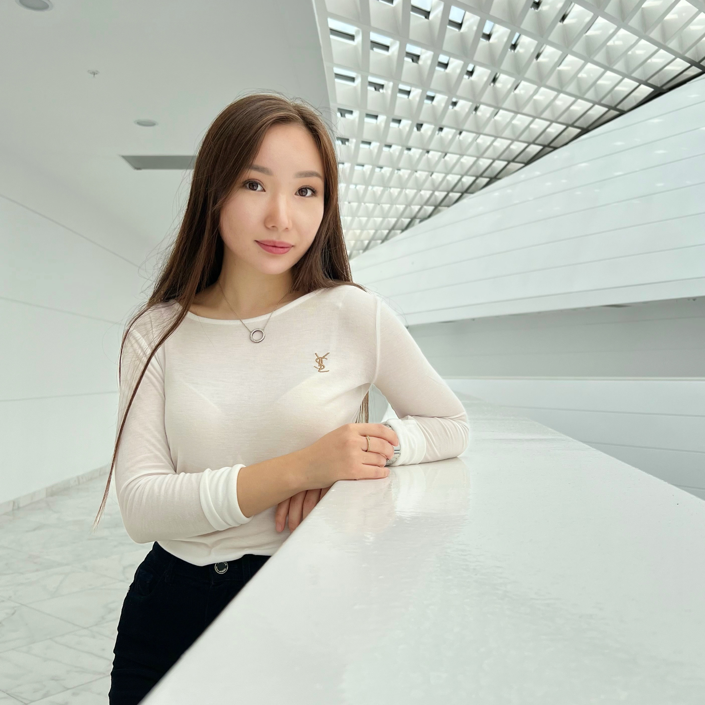
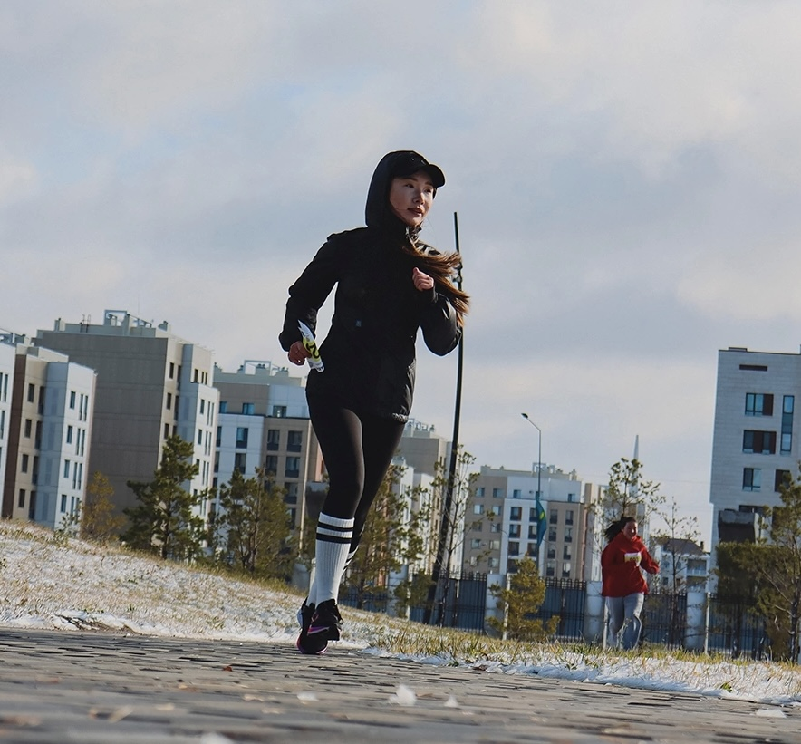

Volunteer Experience
Some people say that I have a VIP seat in heaven.
All my life was devoted to helping people and animals. From the early age, I was organizing a shelter for homeless kittens and dogs.
My real experience in volunteering started during my studies at Nazarbayev Intellectual School. There I have got an opportunity to organize free classes for children from the orphanages. Every evening after classes starting from grade 10 and until my graduation, I and my team were giving free classes in Maths, Biology, English, and Kazakh.
As I became a student of Nazarbayev University, I became a member of Children's Development Foundation. During my 4 years to here, I organized and held 9 charity fairs to raise funds for children who needed surgeries. Also, I organized and been a city coordinator in 4 annual “Warm Winter” charity events at the city and republican levels (I have been coordinating Almaty city in 2020 and 2021, Astana city in 2022)
Currently, I am working upon an anti-harassment document for the NU community as a head of project. We are working together with the university administration and UNDP members to ensure protection of rights and safety of all members of the university community.